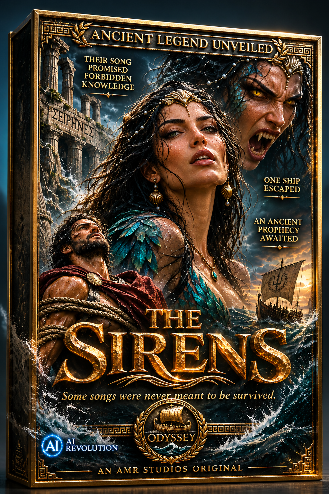

AMR STUDIOS · LIVING GALLERY · EXHIBIT 002
THE SIRENS
Some songs were never meant to be survived.
Move your mouse on a computer or drag the poster on your phone. The movement is intentionally restrained to protect the frame, typography, and characters.
Exact approved poster + matching native 16-bit grayscale depth. Light values are near; dark values are far. Cinematic 2.5D parallax—not a 360° model.
Interactive Sirens depth poster

Loading native 16-bit interactive depth… The complete original poster remains visible.
WebGL 2 is used to retain all 16 bits of depth precision. If that path is unavailable, the unmodified poster is shown instead of a reduced-precision effect. Phone tilt requires permission on supported devices; finger drag does not.